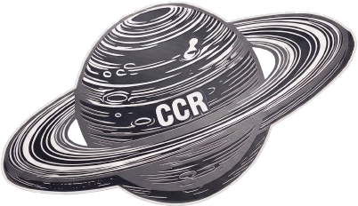
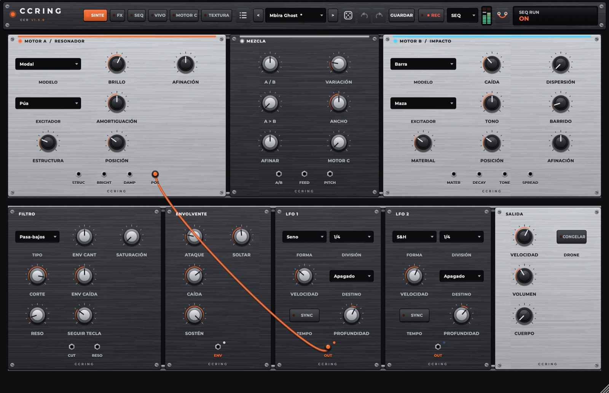
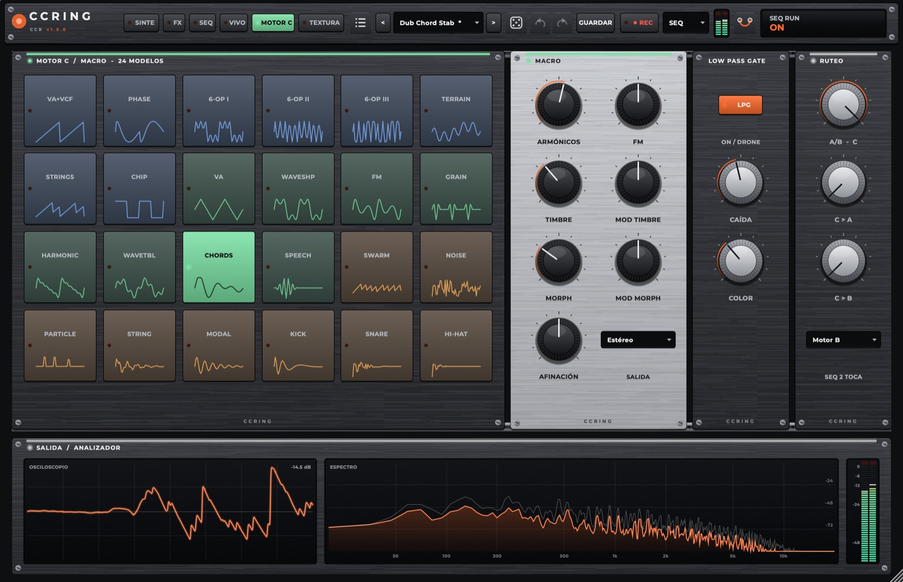
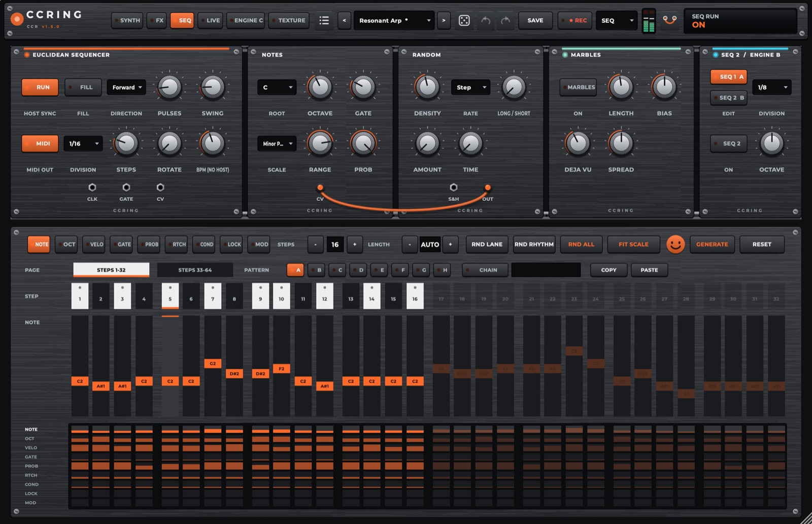
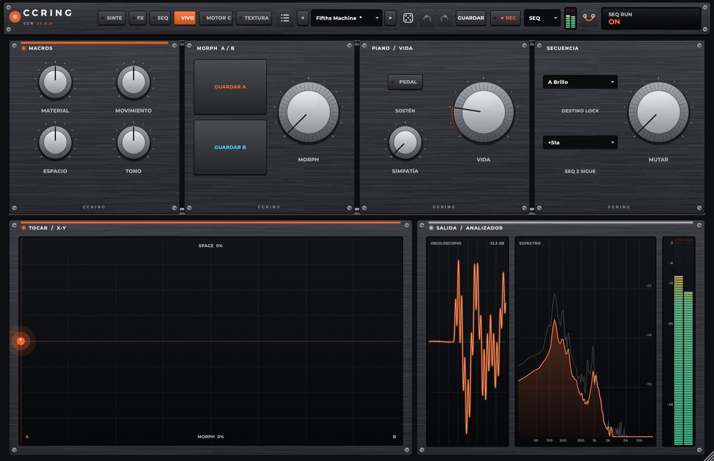
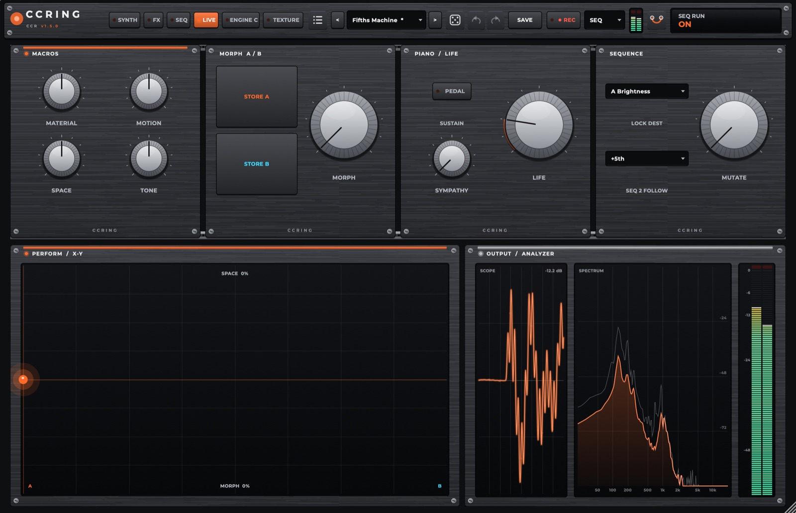
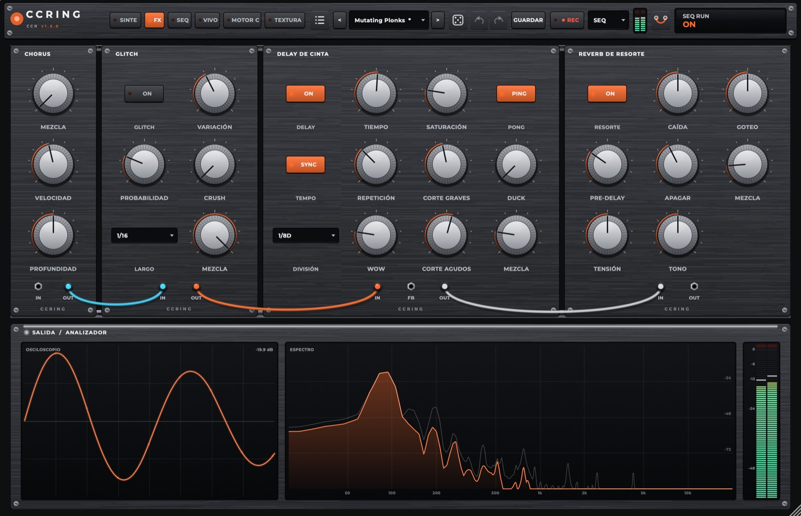
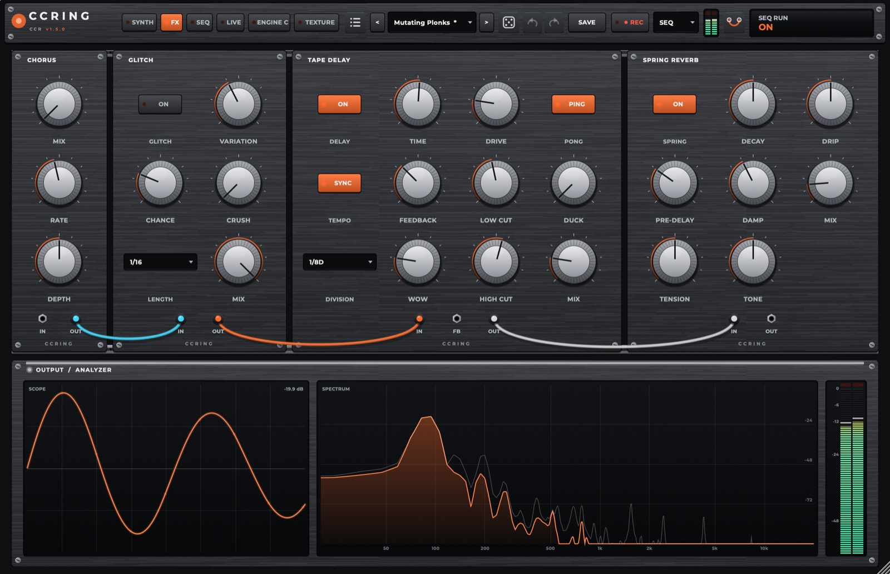
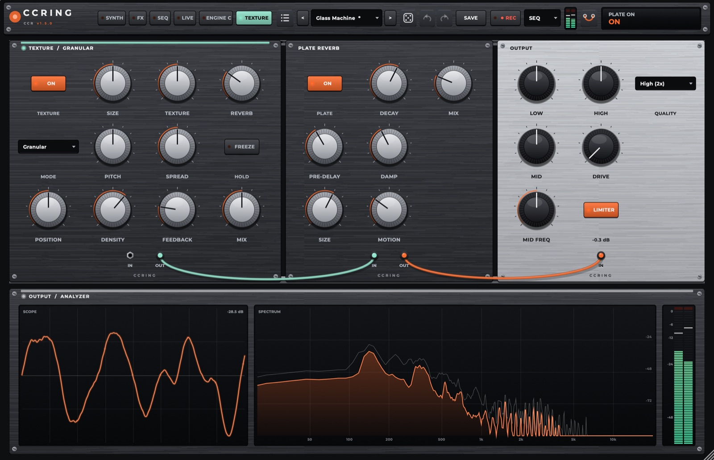

CCRSinte de modelado físico gratis y de código libre. Cuerdas, maderas, metales y parches simulados, 24 modelos de síntesis y un secuenciador pensado para minimal.
A free and open-source physical-modelling synth. Simulated strings, woods, metals and drums, 24 synthesis models and a sequencer made for minimal house.

Cuerda, modal, cuerdas simpáticas, metal, piano, tine y lengüeta, con púa, golpe, arco, soplido, martillo o el motor C como excitador.
String, modal, sympathetic strings, metal, piano, tine and reed — plucked, struck, bowed, blown, hammered or driven by engine C.
Parche, barra, placa, campana, tubo, vidrio, marimba, vibráfono, mbira, steel pan, tambor de mano y gong.
Membrane, bar, plate, bell, tube, glass, marimba, vibes, mbira, steel pan, hand drum and gong.
Basados en Plaits de Mutable Instruments: analógico virtual, FM, wavetable, acordes, voz, ruidos, bombo, redoblante y hi-hat.
Based on Mutable Instruments Plaits: virtual analog, FM, wavetable, chords, speech, noise, kick, snare and hi-hat.
Otro modelo del motor C en cada paso: una batería entera desde un solo secuenciador.
A different engine C model on every step: a whole drum kit from one sequencer.
Un clic, un sonido nuevo: siempre musical y con el volumen parejo. Si no te gusta, deshacés.
One click, one new sound — always musical and level-matched. Don't like it? Undo.
Un oscilador FM frotando una cuerda, un bombo golpeando un gong.
An FM oscillator bowing a string, a kick drum striking a gong.
A la vista, transparentes u ocultos; el mouse sobre un jack muestra lo conectado.
Shown, faded or hidden; hover a jack to see what's patched.







Intel y Apple Silicon, macOS 11 o superior. Instalador .pkg con VST3, AU, CLAP y app suelta.
Intel and Apple Silicon, macOS 11 or later. .pkg installer with VST3, AU, CLAP and standalone app.
Windows 10/11 de 64 bits. VST3, CLAP y app suelta, con instalador .bat.
Windows 10/11 64-bit. VST3, CLAP and standalone app, with a .bat installer.
Manual en español e inglés. Código fuente libre (AGPL-3.0).
Manual in English and Spanish. Open-source code (AGPL-3.0).
CCRing es y va a seguir siendo gratis. Una donación ayuda a que siga creciendo.
CCRing is and will stay free. A donation helps it keep growing.
Mercado Pago (Argentina) · alias nodrama.perro